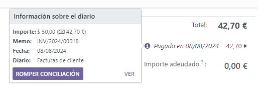
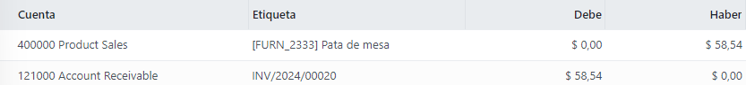
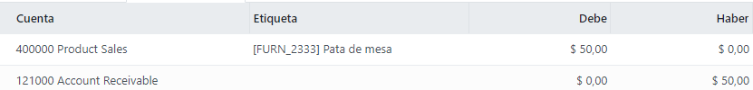

Notas de crédito y reembolsos¶
Una nota de crédito o de débito es un documento que se le da a un cliente en donde se le notifica que se le ha abonado o cargado una cantidad en específico.
Muchos casos de uso pueden resultar en una nota de crédito, por ejemplo:
un error en la factura
una devolución de los productos o un rechazo de los servicios
los productos entregados están dañados
Las notas de débito son las menos comunes, pero normalmente se usan para dar seguimiento a las deudas (ya sea de clientes o a proveedores) que surgen cuando se hacen modificaciones a facturas que ya se habían confirmado.
Nota
Las notas de débito o crédito son la única manera legal de cancelar, reembolsar o modificar una factura que ya está validada. No olvide registrar el pago después si necesita reembolsar el dinero del cliente, o valide la return devolución si se regresó un producto.
Emitir nota de crédito¶
Para crear una nota de crédito nueva desde cero, vaya a y haga clic en Crear. El formulario de la nota de crédito funciona de la misma forma que el formulario de una factura.
Sin embargo, en la mayoría de los casos las notas de crédito se crean directamente a partir de las facturas relacionadas. Para hacerlo, vaya a , abra la factura de cliente relacionada y haga clic en Agregar nota de crédito.
Puede escoger entre tres opciones:
Reembolso parcial
Reembolso completo
Reembolso completo y nuevo borrador de factura
Nota
La secuencia de una nota de crédito empieza con R seguida por el número del documento relacionado (por ejemplo, RINV/2019/0004 está relacionada a la factura INV/2019/0004).
Reembolso parcial¶
Al seleccionar la opción Reembolso parcial, Odoo crea el borrador de una nota de crédito con la información necesaria incluida; información que se obtiene de la factura original. Esta es la opción que debe elegir si desea realizar un reembolso parcial o si quiere modificar cualquier detalle de la nota de crédito.
Nota
Esta es la única opción para facturas que ya estén marcadas como en proceso de pago o como pagadas.
Reembolso completo¶
Cuando selecciona la opción Reembolso completo Odoo crea una nota de crédito, la valida en automático y la concilia con la factura relacionada.
Esta es la opción que debe elegir para realizar un reembolso completo o si desea cancelar una factura validada.
Reembolso completo y nuevo borrador de factura¶
Cuando selecciona la opción Reembolso completo y nuevo borrador de factura, Odoo crea una nota de crédito, la valida en automático, la concilia con la factura relacionada y abre un nuevo borrador de factura que ya tendrá los mismos detalles que la factura original.
Esta es la opción para modificar el contenido de una factura validada.
Emitir nota de débito¶
Para crear una nota de débito desde cero, vaya a o haga clic en la factura por la que quiere emitir la nota de débito. En la vista de formulario de la factura, haga clic en Agregar nota de débito, llena la información y haga clic en Crear.
Registrar un reembolso de proveedor¶
Los reembolsos a proveedores se registran de la misma manera que las notas de crédito:
Para crear una nota de crédito desde cero tiene dos opciones. La primera opción es ir a y haga clic en Crear. La segunda opción es abrir la factura del proveedor y haga clic en Agregar nota de crédito.
Registrar una nota de débito¶
La forma en la que registramos las notas de débito es similar a la forma en la que emitimos estas notas a los clientes:
Debe ir a , abra la factura en la cual quiera registrar la nota de débito y haga clic en Agregar nota de débito. Llene la información y haga clci en Crear nota de débito.
Asientos contables¶
Emitir una nota de débito o de crédito desde una factura resulta en la creación de un asiento de reversión que elimina todos los apuntes que se generaron a partir de la factura original.
Example
El asiento de diario de una factura:
Y aquí está el asiento de la nota de crédito generado para anular la factura original anterior:
